Snörapporter · Guider
Dagliga snörapporter för skidåkare: var snön ligger, vad som är på väg och var du kan åka, från SnowScopes snökarta och mätstationer. Varje siffra kommer från dagens data.

Kvitfjell, OS-störtloppsberget norr om Lillehammer: vanligt snödjup nederst, mitt på och på toppen månad för månad från 46 tidigare vintrar, de säkra veckorna och våren.
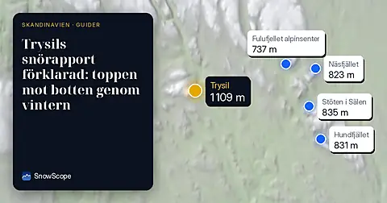
Varför Trysils snörapport visar två helt olika siffror: vanligt snödjup nederst, mitt på och på toppen av Trysilfjellet från 46 tidigare vintrar, månad för månad.
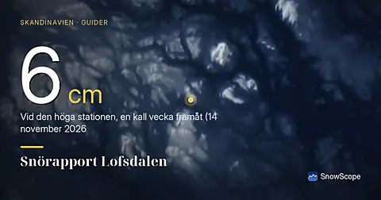
Lofsdalen har 6–8 cm över dalen enligt den 13 november 2026, med 7 cm nysnö prognostiserat under nästa vecka och ingen regn i sikte.

Røros ligger på 630 m på en bergsluttning. Den 13 november låg 11 cm mätt vid väderstation—tunn men verklig vintervind för hundspannssäsongen.

Romme Alpin fick fläckvis tidig snö den 13 november 2026. Väderstation i Borlänge 12 km bort mätte 4 cm; Ludvika hade 10 cm. Regn dominerar prognosen.

Snöläget i Beitostølen i mitten av november 2026: runt 10 till 13 cm i hela området enligt Norges nationella snökarta, 10 cm till väntas i veckan utan regn, och hur 46 tidigare vintrar brukar se ut i den höga byn.
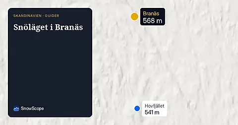
Den 13 november mätte stationen vid Kindsjön på 425 m nära Branäs 27 cm snö medan dalbotten förblev snöfri. Höjden är allt den här veckan i Värmland.
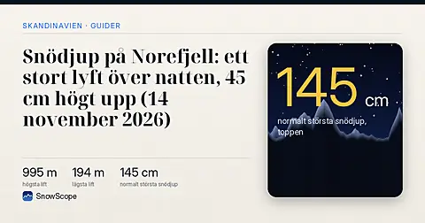
Snödjup på Norefjell i mitten av november 2026: Norges nationella snökarta hoppade från runt 4-5 cm till 15-20 cm på en natt, med ungefär 45 cm på högplatån. Veckan framåt, regnrisk längst ner och 46 tidigare vintrar.

Tänndalen har 7 cm vid basstationen den 13 november, med 8 cm prognos kommande vecka. Ramundberget öppnar 19 december.
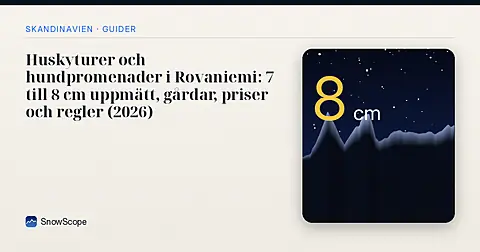
Rovaniemis första snö kom den 13 november: 7–8 cm vid marknivån. Här är vad huskybönderna tar betalt, när de öppnar, och hur du går säker med hundar i Norra istället.
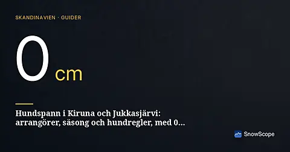
Kiruna stad har 0 cm snö den 13 november. Hundslädningsoperatörer arbetar med tunn snö i början av säsongen. Det här bör du veta om turer och lokala regler.
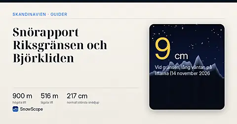
Snörapport för Riksgränsen och Björkliden i mitten av november 2026: stationen i Katterjåkk mätte 9 cm och Abisko 2 cm den 13 november, veckan framåt, varför liftarna öppnar först i februari och 46 tidigare vintrar.
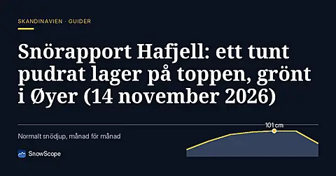
Snörapport för Hafjell i mitten av november 2026: runt 2 cm nära toppen och inget nertill enligt Norges nationella snökarta, 9 cm väntas på toppen i veckan med regn längre ner, och hur 46 tidigare vintrar brukar se ut i slutet av november.
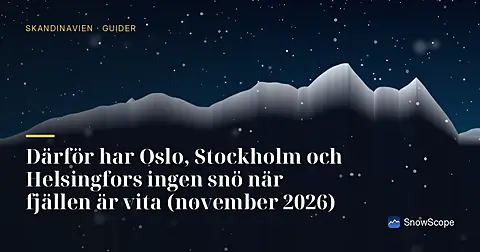
Den 13 november 2026 mätte väderstationerna i Stockholm och Helsingfors 0 cm snö medan Sälen hade 45 cm och Umeå 20 cm. Höjden, havet, staden och ovädrens väg förklarar det, med siffror från 46 tidigare vintrar.

Snöläget i Vemdalen i mitten av november 2026: svenska väderstationer runt Vemdalsskalet och Björnrike mätte 6 till 12 cm den 13 november efter två snöiga dagar, runt 8 cm till i veckan, öppningsplaner och 46 tidigare vintrar.
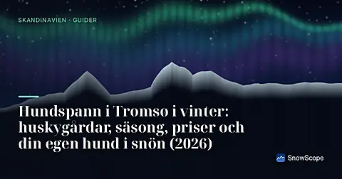
Tromsøs hundgårdar öppnar från mitten av november. Den 13 november låg det 6 cm snö i stan men bergen höll 44 cm. Här är hur du bokar och vad du behöver veta.

Sälen station nära Kläppen mätte 45 cm den 13 november efter en natt med kraftigt snöfall. Regn och mild luft kommer denna vecka. Data från 13 november 2026.
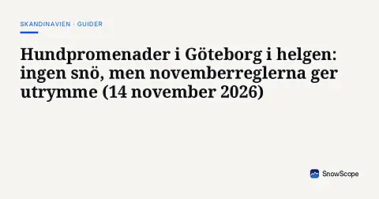
Göteborg har 0 cm snö den 14 november. Helgen blir mild. Novembers koppelregler är avslappnade: utforska parker och skogar med din hund.
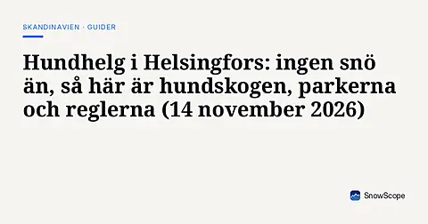
Helsingfors för hundägare i helgen: 0 cm snö uppmätt vid alla fem stationer i staden på fredagen. Hundskogen i Östersundom, nästan hundra hundparker, reglerna i skidspåren och en grå, mild helg.
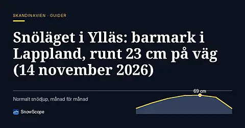
Snöläget i Ylläs i mitten av november 2026: väderstationerna runt Ylläs mätte 0 till 2 cm den 13 november, långt under det normala; runt 23 cm snö väntas i veckan utan regn, och backarna siktar på att öppna 21 november.
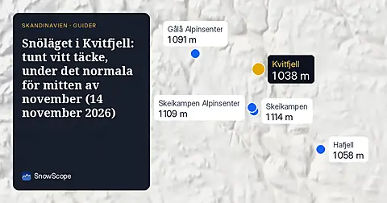
Snöläget i Kvitfjell i mitten av november 2026: runt 5 cm i de övre backarna och 3 cm nertill enligt Norges nationella snökarta, ungefär 10 cm väntas högt upp i veckan, och vad 46 tidigare vintrar säger om slutet av november och december.

Toppsökaren i SnowScope är en gratis app för att känna igen berg: rikta mobilen mot fjällen så visar den topparnas namn, höjd, avstånd och tid upp. Våra tester: 98 % av topparna den visar syns verkligen, och på riktiga foton rättade den kompassfel på upp till 105° till 0,15°. Gratis med 3 namn, alla toppar för 14 kr en gång.
Göteborg stad är snöfritt den 13 november. Gunntorp, 39 km nordöst, mätte 12 cm, men kustationerna visar 0 cm över hela regionen.

Luleås flygplats skickade ingen snödjupmätning i dag, men sex omgivande stationer mätte alla 3 till 7 cm nysnö den 13 november 2026—en normal start för mitten av november.
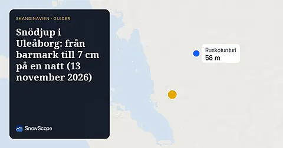
Uppmätt snö i Uleåborg den 13 november 2026: 7 cm i Kaukovainio, 5 cm på Karlö, 8 cm i Ruukki, allt nytt sedan torsdagen. Lite mer på väg före måndagens töväder.

Stockholm har 0 cm snö den 13 november. Den närmaste snön ligger 75 km bort. Här är hundvänliga alternativ i staden och när snön kan komma.

Jämtlands första ordentliga snötäcke kom denna vecka: 19 till 33 cm mättes vid stationer omkring Storsjön den 13 november. Ingen tjöning förväntas.

Umeå registrerade 20 cm på Röbäcksdalen den 13 november efter bar mark fyra dagar tidigare. Detta är långt före det typiska novemberdjupet.

Den 13 november mätte Kiruna 0 cm snö för första gången på 46 vintrar. Prognosen lovar 1–2 cm i helgen, långt under typiska 23 cm.

Den 13 november hade 133 av Sveriges 322 väderstationar snö. Djupast låg det i ett bälte från Dalarna till Västerbotten, med Sälen på 45 cm, medan den långt norr ligger nästan bar.
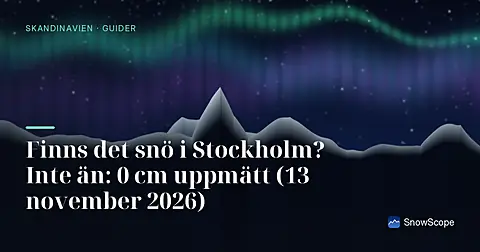
Stockholm uppmätte 0 cm snö den 13 november 2026. Huvudstaden är snöfri medan norr får sitt första betydande snötäcke.

Oslo och Umeå leder 14 nordiska städer med snö den 13 november: 37 cm ovan Oslo, 20 cm i Umeå. Kiruna och södra huvudstäder är snöfria.